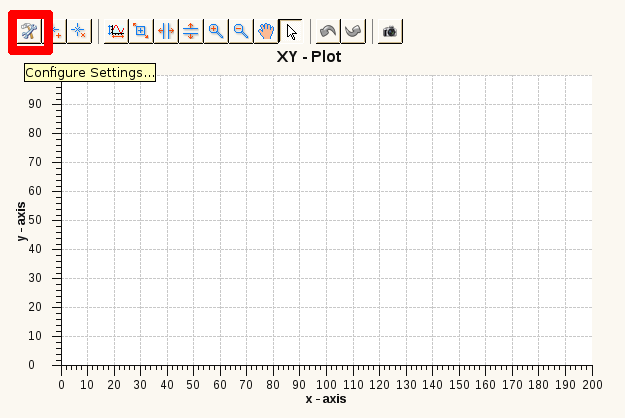

| Property | Description | Domain | Mandatory |
|---|---|---|---|
| Motor Axis | the motor axis defining the x axis of the plot | set of motor axes present in the scan module | true |
| Preinit Window | defines whether the plot should be cleared (false only has any effect if the axes are still the same) | {true, false} | — |
| Scale Type | defines whether the axis should be scaled linear or logarithmic | {linear, log} | — |
| Y Axis: | |||
| Detector Channel | the detector channel defining the y axis of the plot | set of detector channels present in the scan module | true |
| Normalize Channel | the detector channel the y axis channel should be normalized with (select none for no normalization) | set of detector channels present in the scan module | false |
| Color | the color of the graph | RGB | — |
| Linestyle | the line style of the graph (e.g. solid or dashed) | set of CSS line styles | — |
| Markstyle | the mark style of the graph (e.g. circle or square) | set of CSS mark styles | — |
| Scaletyle | defines whether the axis should be scaled linear or logarithmic | {linear, log} | — |
Note: Detector Channel, Normalize Channel, Color, Linestyle, Markstyle and Scaletype appear twice (once for each y axis).
Note: These settings can also be modified after creating a scan description and executing the scan by clicking on the configure button in the plot view of the EveEngine Perspective (see image below).
